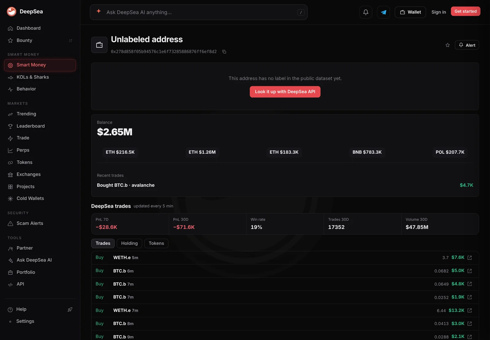
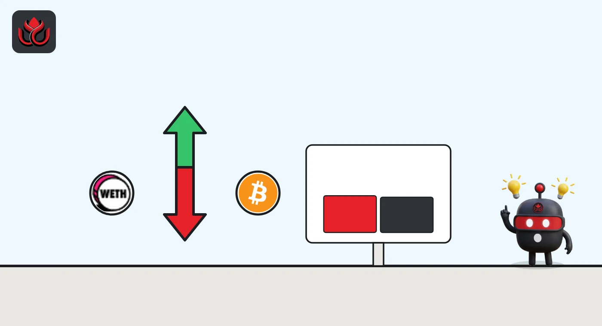

Two Avalanche wallets made 3,121 trades in a day, five times Monday's pace, and ended near even
DeepSea's shark table shows $4.86 million of bridged ether and bitcoin bought on Avalanche and $4.72 million sold. Almost all of it came from the same two wallets, swapping back and forth.
Key points
- In the 24 hours to 12:47 a.m. ET on November 12, 2026, DeepSea's flow table shows sharks on Avalanche bought $2,714,667 of WETH.e and sold $2,635,032, and bought $2,147,075 of BTC.b and sold $2,083,483.
- The big counts in the table are trades, not wallets: 1,611 WETH.e trades and 1,511 BTC.b trades, by 3 wallets each. Two wallets made 3,121 trades between them.
- Both wallets are behind on closed trades this week: minus $28,578 and minus $23,247, DeepSea's 7-day profit table shows. AVAX was $8.58 on CoinGecko, up 1.3% in a day.
 What DeepSea's data shows
What DeepSea's data shows
DeepSea's 24-hour flow table (built 12:47 a.m. ET) adds up trades by wallets it tags as sharks, large and active traders. On Avalanche, two tokens stand out. WETH.e, ether bridged to Avalanche: $2,714,667 bought and $2,635,032 sold in 1,611 trades by 3 wallets. BTC.b, bridged bitcoin: $2,147,075 bought and $2,083,483 sold in 1,511 trades by 3 wallets.
The numbers next to each token count trades, not wallets. Two wallets did nearly all of it. The one ending in f8d2 made 1,812 trades ($2,822,128 bought, $2,736,095 sold). The one ending in 2a7f made 1,309 ($1,993,509 bought, $1,933,328 sold). Together that is 3,121 trades, against 3,122 for the two tokens combined. DeepSea gives neither wallet a name.

Data: DeepSea (desea.io), checked November 12, 2026, 12:47 a.m. ET.
Churn, not a buying spree
New to the tools? Read what DeepSea is.
Buys and sells almost match. The net is $79,635 of WETH.e and $63,592 of BTC.b bought, less than 3% of the flow. The average trade was about $3,070. The pace held in the table's last hour: 78 WETH.e trades and 83 BTC.b trades by 2 wallets, with sales a little ahead of buys.
On Monday night, November 9, the same two wallets made 580 trades in a day, we reported. The pace is now more than five times higher. Many small trades that buy and sell close to the same totals look like automated trading, but DeepSea does not say what runs the wallets or why.
Avalanche shark flows in 24 hours
US$ thousand
24 hours to 12:47 a.m. ET, November 12, 2026. Source: DeepSea live flows.
Is it paying?
Not so far. DeepSea's realized profit table (first in, first out) puts f8d2 at minus $28,578 over 2,702 closed trades in 7 days, with 622 winners (23%). 2a7f is at minus $23,247 over 2,140 closed trades, 582 winners (27%).
CoinGecko showed AVAX at $8.58 at 12:48 a.m. ET, up 1.3% in 24 hours and down 2.2% in 7 days.

Why it matters
This analysis uses data from DeepSea and CoinGecko. A busy table can look like a crowd of big buyers. Here it is two wallets buying and selling the same two tokens at high speed, ending close to flat. Who controls them is unknown.
LC Insight analysis
This section is our reading of the facts above, not a statement of fact.
- We think the useful reading is the net, not the total: about $143,000 net bought out of $9.58 million traded.
- Thousands of small trades with a 23% to 27% win rate are losing money for now, so the pace may not last.
- A table that counts trades can make two wallets look like a crowd. Here 3,121 trades came from just two addresses.
What's next
- Whether f8d2 and 2a7f keep trading at this pace
- Whether their 7-day losses grow or shrink
- Any sharp change in the net WETH.e or BTC.b flow
Disclaimer. This article is based on public information and the sources listed below as of the update time shown. It is for information only and is not investment, legal or tax advice. Figures may change as companies and authorities publish new data.
Sources
- DeepSea, live flows by token and wallet, 24 hours (read November 12, 2026, 12:47 a.m. ET)
- DeepSea, realized profit by wallet, 7 and 30 days (read November 12, 2026, 12:47 a.m. ET)
- DeepSea, wallet page for the address ending in f8d2 (read November 12, 2026, 12:50 a.m. ET)
- CoinGecko, Avalanche (AVAX) price (read November 12, 2026, 12:48 a.m. ET)